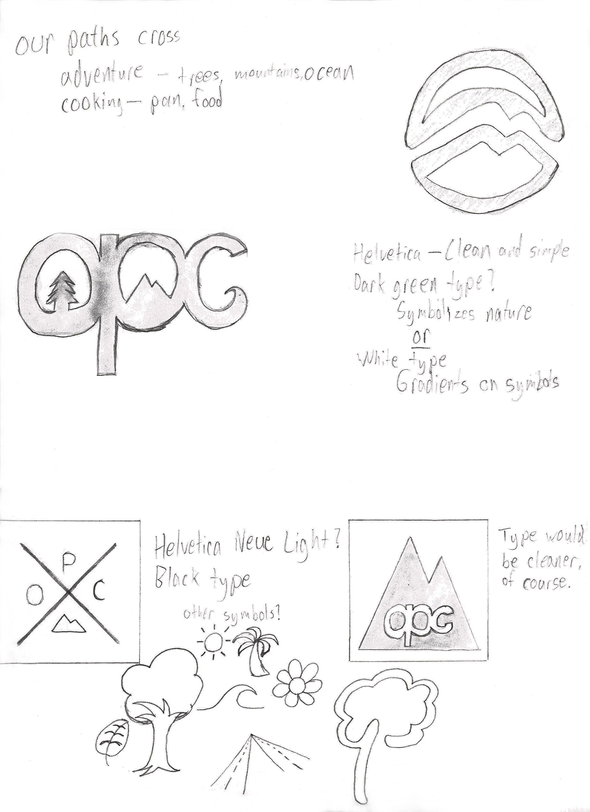
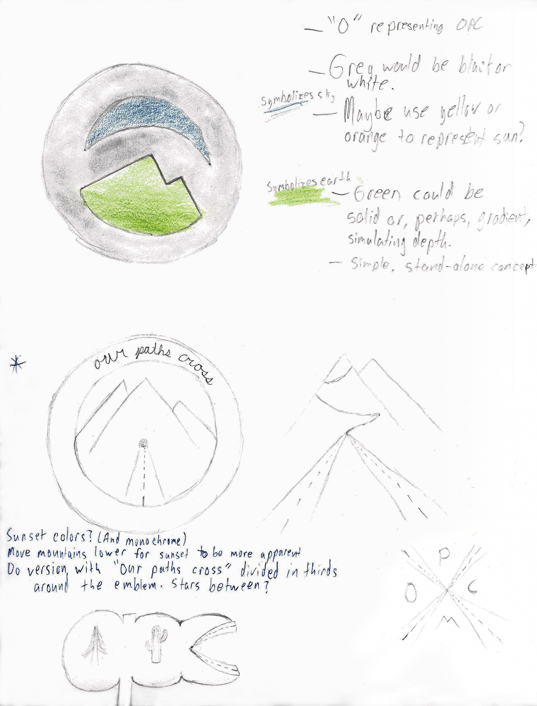

Our Paths Cross Logo
A logo created for Our Paths Cross, bloggers who adventure, create dog treats, and write great content! This project entailed a formal ideation process: from initial meetings with the client and meetings to discuss iterations and direction, this ultimately resulted in logo which beautifully represents the motives of the client's site and its content.
Analog Iterations
Given that the site's content is very nature-based, ideations started by delving into symbols and colors representing nature, alike trees, mountains, greens, earthy tones, and those reminiscent of the sunset.
Scan 1
Scan 2
Hello, Digital World
After some pondering and various sketches, the basic concept for the logo was determined and expanded upon in digital form. Several digital iterations were created and discussed, ultimately leading toward the final design.
Nearing the End
After many iterations, the design with the full circle around the mountains was decided upon. For the final set of iterations, a variety of typefaces were used in order to offer different choices for the final logo, and an addition of the colored background was made.
End
Thus, the final logo came to be. Versions with and without a banner were created for some variety and for use on sites that use circular image icons or for smaller images where the text might not be legible — the version without the banner also prints beautifully onto stickers.
This was a very fun project, and one I am very proud to be able to add to my portfolio, thanks to the kind folks at Our Paths Cross!